Accuracy metrics – spatial cross-validation
These are the results from conducting spatial cross validation. Because of the shapes of Pennsylvania and New York, I used 10 bands running North-South across these states as the test bands for 10-fold cross validation. Below I show the distributions for the overall model metrics for PA and NY. Significance comparisons are made between the cross-validation accuracy metrics of deepbiosphere and two conventional modeling approaches: Maxent trained on bioclimatic data and random forest trained on bioclimatic data.
Binary classification metrics
These metrics threshold all probabilities ≥0.5 as present and <0.5 as absent for these metrics
Presence accuracy
The fraction of examples where the correct species observed at that location was predicted as present.
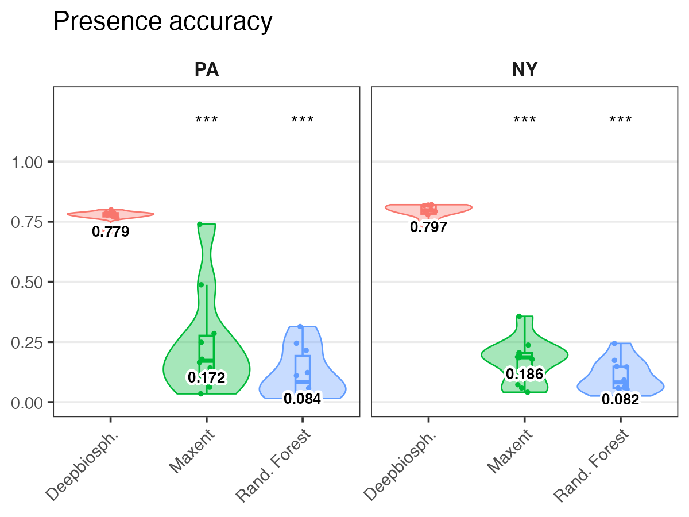
Precision score
Precision Measures how many species predicted to be present were actually present.
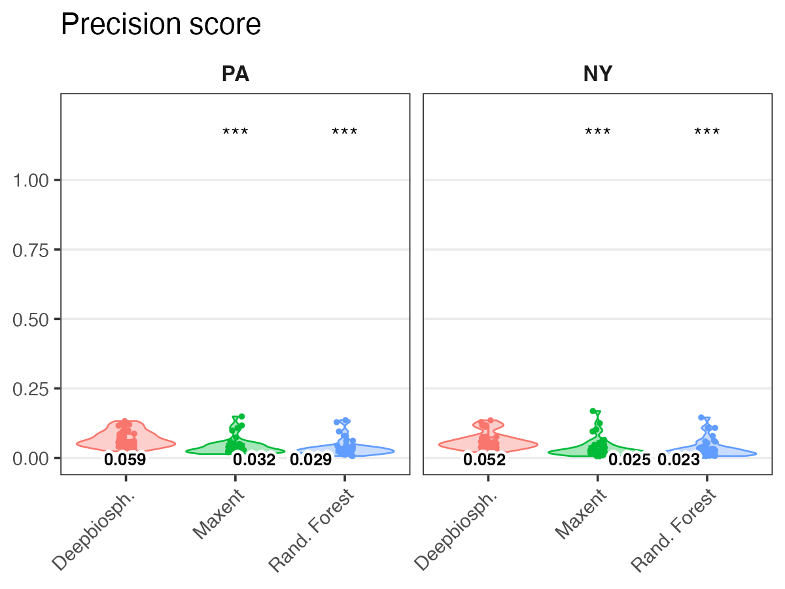
Recall score
Recall Measures how many of the true species present are predicted as present.
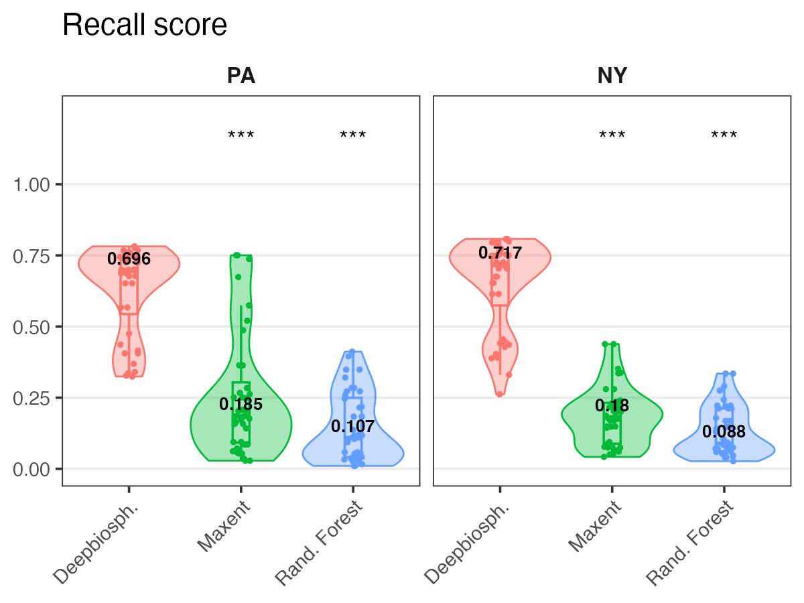
F1 score
F1 score The harmonic mean of precision and recall and represents a conservative mean of the two (i.e. is more affected by low values).
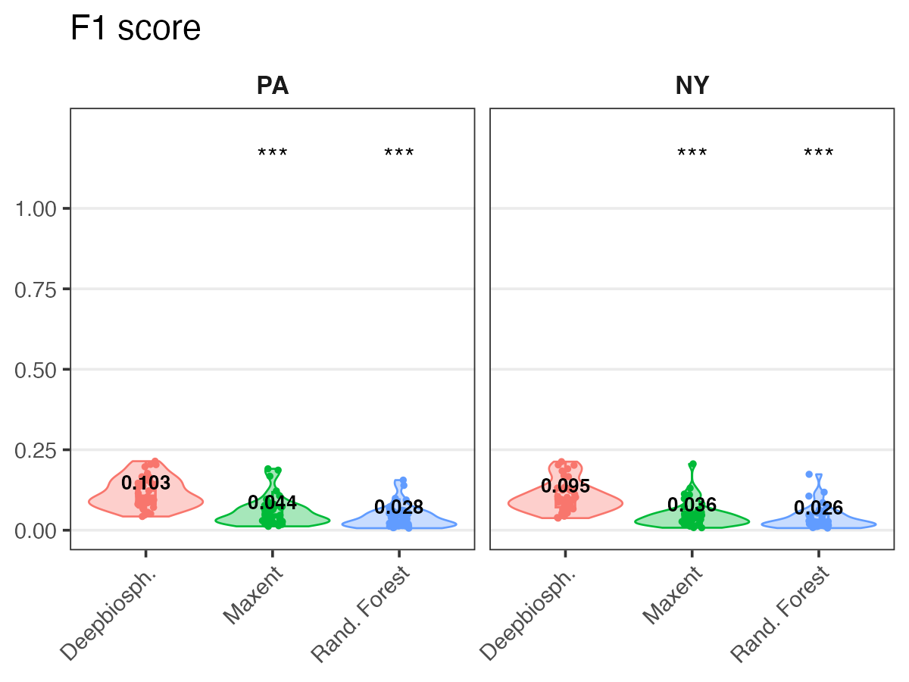
Discrimination metrics
In order to take into account the effect of thresholds, discrimination metrics measure binary classification ability across a wide range of presence thresholds and describe the relationship between threshold change and performance change.
Area under curve [ROC] – uncalibrated
AUC ROC Area under the receiver operating characteristic curve averaged across species
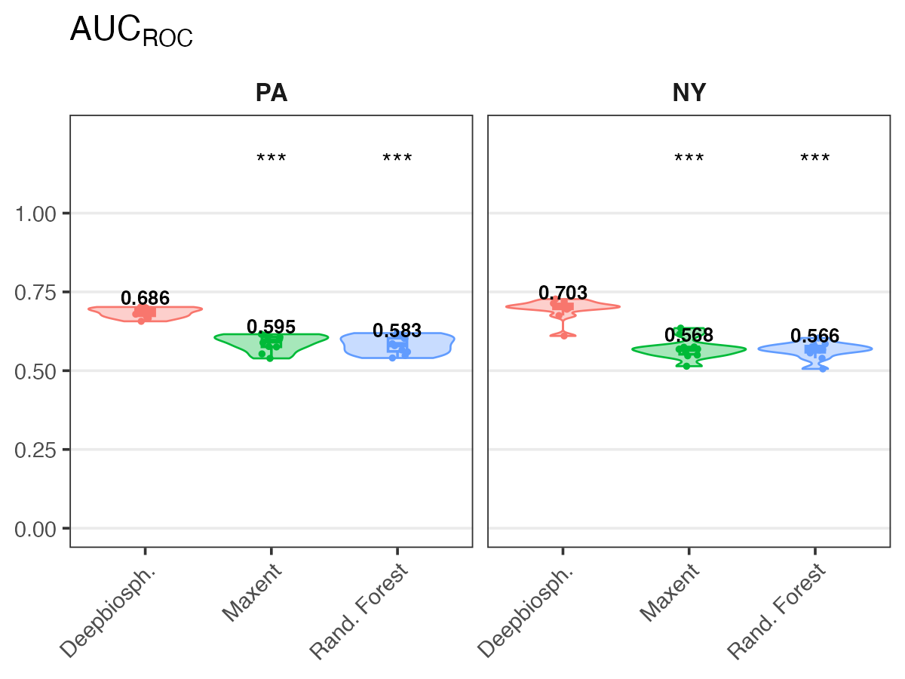
Area under curve [PRC] – uncalibrated
AUC PRC Average area under the precision-recall curve averaged across species
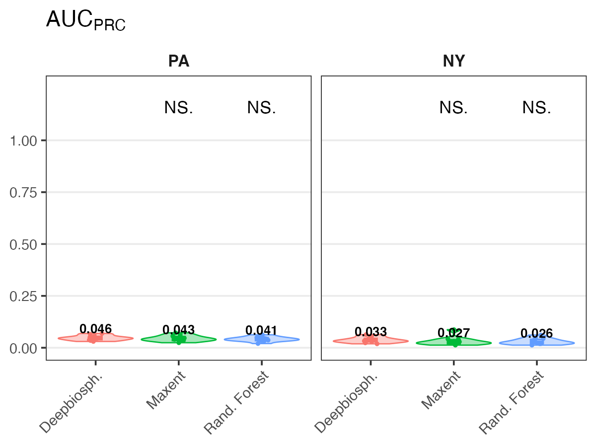
Calibrated area under curves
A model which has extremely low predicted probabilities can still have a high AUCROC if within its range of predicted probabilities the model has good sensitivity and specificity for that class.
This means that it’s possible to have a model that never predicts a species as present with the standard presence/absence threshold of 0.5 yet still has a high average AUCROC.
To correct for this, Gillespie et al. (2024) also introduce a calibrated area under the curve score where the chosen thresholds are linearly interpolated values between 0 and 1.
Calibrated AUC [ROC]
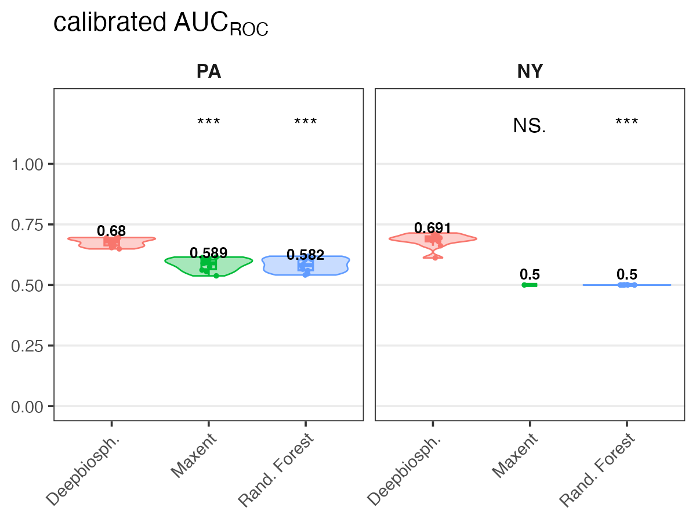
Calibrated AUC [PRC]
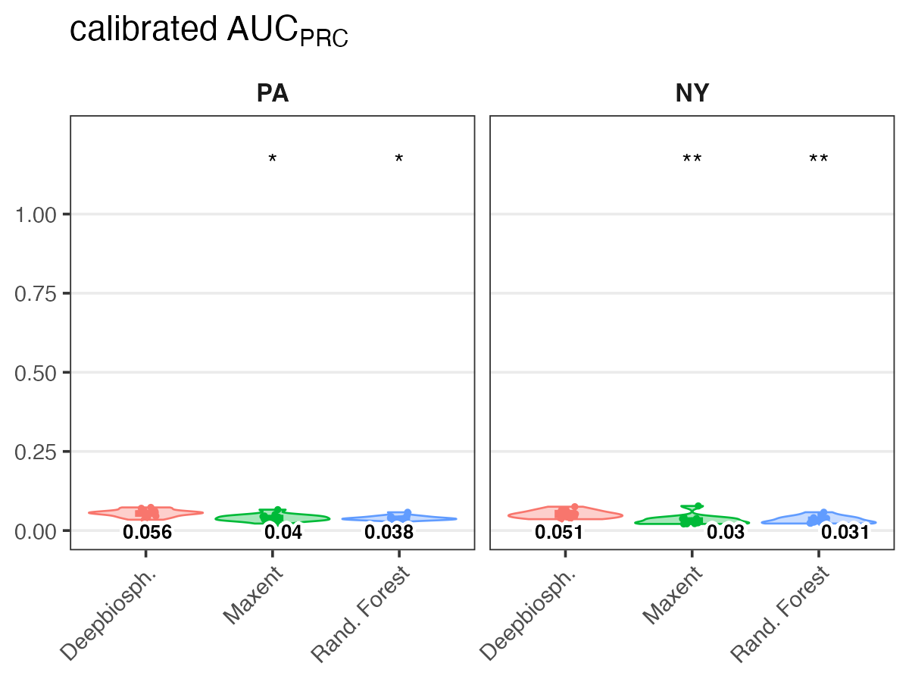
Ranking metrics
Top-K (top 1, 5, 30, 100) These metrics measure how many times the correct species was correctly predicted within the top-K highest-ranked species within a given image (where, for example, K=5 would be the 5 species with the highest probability of presence).
Species top 1
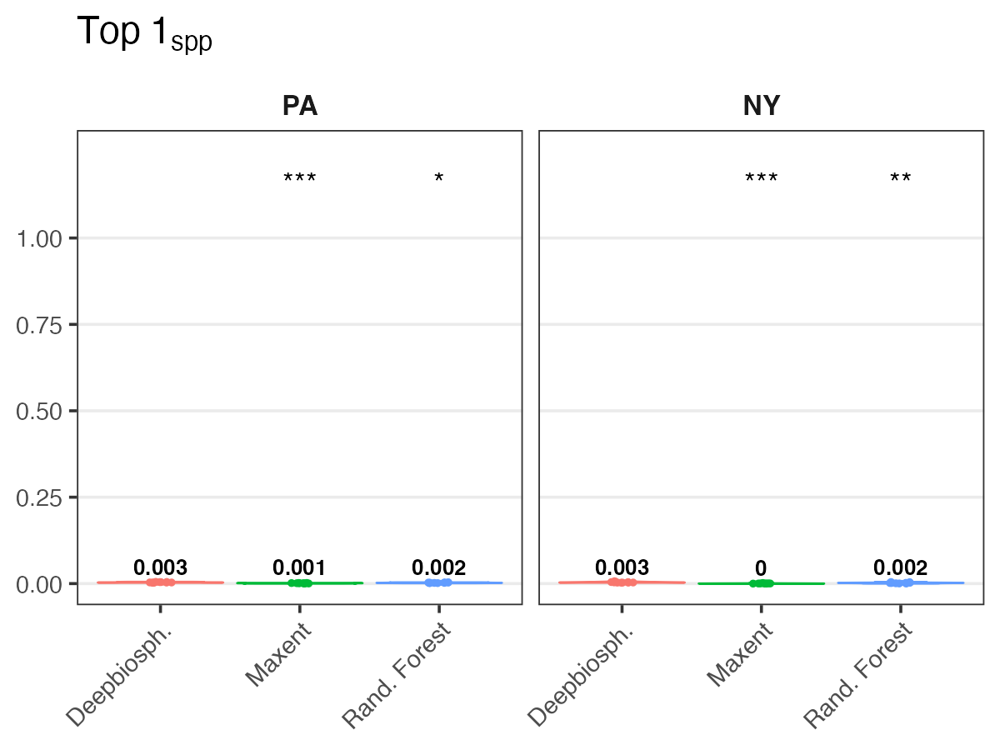
Species top 5
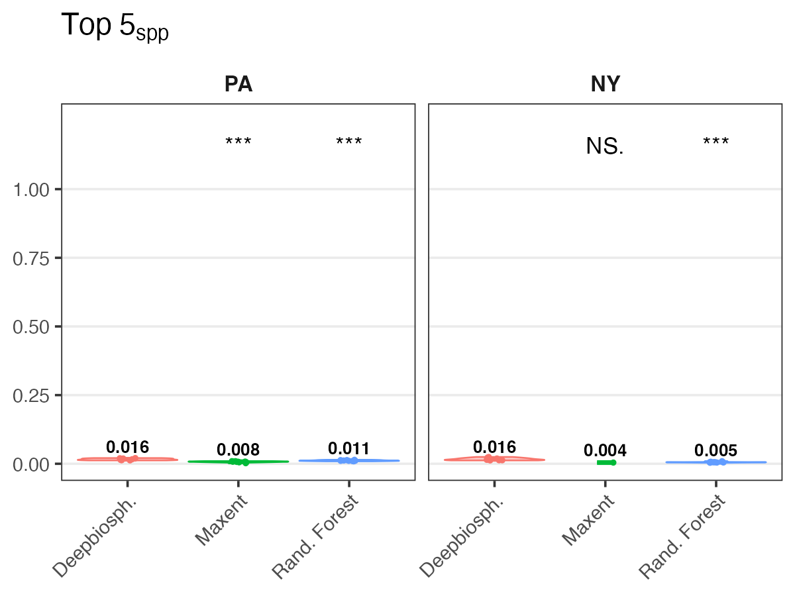
Species top 30
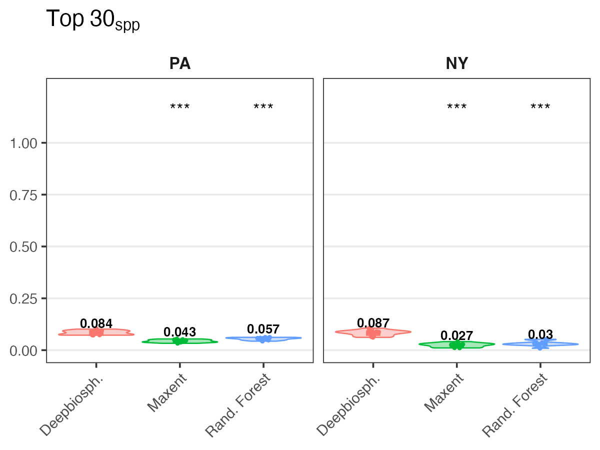
Species top 100
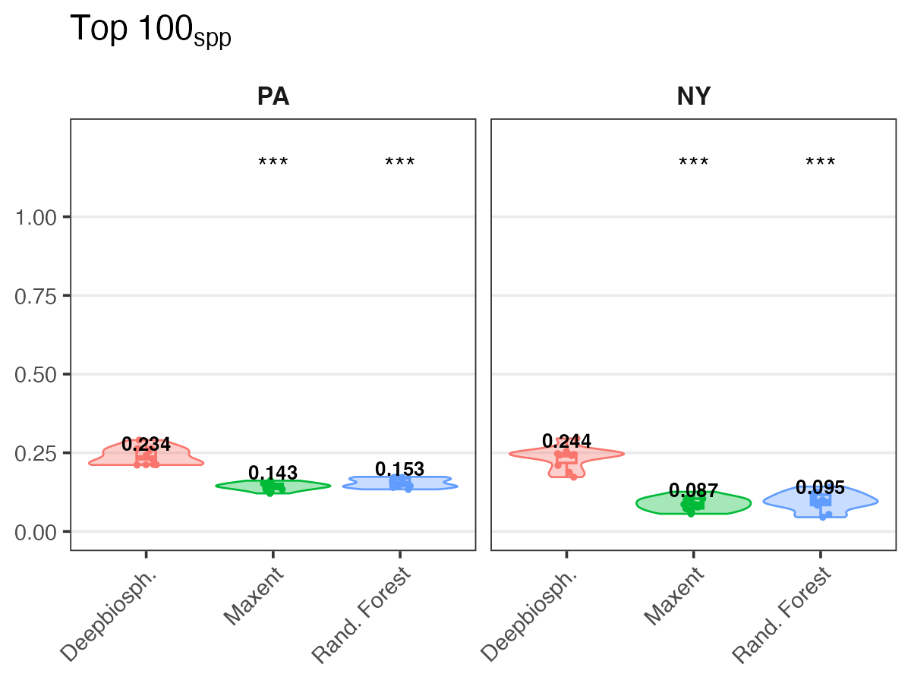